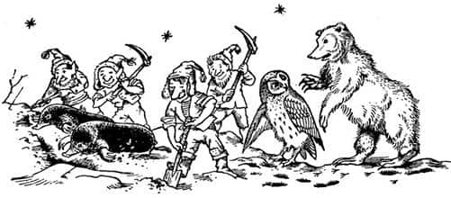
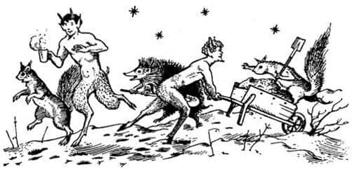

Jill’in Kayboluşu
Yukarıdan gelen ışık, karanlıktaki hiçbir şeyi aydınlatmıyordu. Diğerleri Jill’in, Suratsız’ın sırtına çıkmaya çalıştığını göremiyor, sadece duyabiliyorlardı. Yani Kıllıkıpırdak’ın, “Parmağını gözüme sokmana gerek yok” ve “Ayağını ağzıma sokmasan iyi olur” ya da “Böylesi daha uygun. Şimdi ben senin bacaklarını tutacağım. Bu dengeni koruyabilmen için, böylece ellerini kullanabileceksin” dediğini duyuyorlardı.
Sonra yukarıya baktılar ve çok geçmeden Jill’in başının ışıkta beliren kapkara şeklini gördüler.
“Pekâlâ?” diye bağırdılar endişeyle.
“Bir oyuk” dedi Jill. “Biraz daha yüksekte olsaydım girebilirdim.”
“İçinde ne görüyorsun?” diye sordu Eustace.
“Pek bir şey göremiyorum” dedi Jill. “Suratsız, bacaklarımı bırak da omuzlarına basarak ayağa kalkabileyim. Kenara tutunarak dengede durabilirim.”
Jill’in hareket ettiğini duyabiliyorlardı ve sonra deliğin kurşuni renkli girişi önünde vücudunun daha büyük bir kısmı seçildi, beline kadar görülebiliyordu.
“Bana bak—” diye başladı Jill, ama aniden bir çığlık kopardı. Tiz bir çığlık değildi bu. Sanki ağzı kapatılmış, ya da ağzına bir şey tıkılmış gibi bir ses çıkmıştı. Tekrar sesine kavuştuğunda avazı çıktığı kadar bağırıyordu, ama diğerleri ne söylediğini anlayamıyordu. Sonra aynı anda iki şey birden oldu. Aydınlık, bir ya da iki saniye kadar tamamıyla perdelenmişti ve itişme, kakışma sesleri geldi. Kıllıkıpırdak’ın nefes nefese, “Çabuk! Yardım edin! Bacaklarını tutun. Biri Jill’i çekiyor. İşte! Hayır, burada. Çok geç!” diyen sesini duydular.
Oyuğun ağzı ve soğuk ışık tekrar ortaya çıktı. Jill ortadan kaybolmuştu.
“Jill! Jill!” diye bağırdılar çılgınlar gibi, ama cevap veren yoktu.
“Neden ayaklarını tutamadın?” dedi Eustace.
“Bilmiyorum Scrubb” diye inledi Suratsız. “Uyumsuz biri olmak için doğmuşsam hiç şaşırmam. Kaderim böyle. Kaderimde Pole’un ölümüne neden olmak varmış, aynı Harfang’da konuşan geyik yemek gibi. Benim hatam olmadığını söylemek istemiyorum tabii.”
“Bu başımıza gelebilecek en büyük utanç ve acı” dedi Prens. “Cesur bir bayanı düşmanın ellerine verdik ve biz güvendeyiz.”
“Çok karamsar olmayın, efendim” dedi Suratsız. “Bu mağarada pek güvende değiliz, ayrıca açlıktan ölüyoruz.”
“Jill’in geçtiği yerden geçip geçemeyeceğimi merak ediyorum” dedi Eustace.
Jill’in başına gelenler şunlardı: Deliğe başını sokar sokmaz, bir tavan penceresinden yukarıya değil, bir üst kat penceresinden aşağıya bakar gibi olmuştu. O kadar uzun süredir karanlıktaydı ki başlangıçta neye baktığını anlayamamıştı, ama görmeyi umduğu güneşli ve aydınlık dünyaya bakmıyordu. Hava ölümcül bir şekilde soğuktu; mavi ışık cılızdı. Epeyce gürültü vardı, havada bir sürü beyaz şey uçuşuyordu. O anda, Suratsız’a ayaklarını bırakması için bağırmıştı.
Bunu yaptıktan sonra daha iyi görüp duyabiliyordu. İki farklı ses duyuyordu; bir sürü ayağın ritmik bir şekilde yere vuruşu ve dört keman, üç flüt ve bir davulun çaldığı müzik. Kendi bulunduğu yeri de açıkça görebiliyordu. Beş metre altında düzlüğe ulaşan dik bir yamaçtaki bir delikten dışarıya bakıyordu. Her şey bembeyazdı. Bir sürü insan hareket halindeydi. Sonra birden soluğu kesildi! Gördüğü yaratıklar küçük ve yakışıklı Faunlar ve saçları arkalarında dalgalanan, yapraktan taçlar takan orman perileriydi. Bir saniye için sanki bilinçsizce hareket ediyorlarmış gibi görünmüştü. Sonra dans etmekte olduklarını anladı – bu öylesine karmaşık figürlerle dolu bir danstı ki, anlamak zaman almıştı. Sonra, cılız mavi ışığın ayışığı, yerdeki beyaz şeyin de kar olduğu şimşek gibi çaktı beyninde. Bundan hiç kuşkusu yoktu! Başının üzerindeki siyah ve soğuk gökyüzünden yıldızlar ona bakıyordu. Dans edenlerin ardındaki uzun ve siyah şeyler ağaçtı. Sadece yukarı dünyaya dönmekle kalmamışlar, Narnia’nın ortasına çıkmışlardı. Jill sevinçten bayılacağını sanmıştı. Duyduğu müzik biraz ürkütücü; Cadı’nın nağmelerini andıran, ama tersine iyi büyüyle dolu olan vahşi bir müzikti.
Tüm bunları anlatmak uzun sürüyor, ama görmek elbette daha kısa sürmüştü. Jill anında diğerlerine, “Bana bakın! Her şey yolunda. Dışarıdayız, evimize döndük” diye bağırmak üzere dönmüştü. “Bana bakın”dan daha ileriye gidememesinin nedeni şuydu: Dans edenlerin etrafında, genelde altın püsküllü, kürk astarlı ve kırmızı renkli en iyi elbiselerini giymiş cücelerden oluşan bir çember vardı. Dansçıların etrafında dönerlerken kartopu fırlatıyorlardı. (Jill’in havada uçuştuğunu gördüğü beyaz şeyler bunlardı.) İngiltere’deki komik çocukların yaptığı gibi kartoplarını dans edenlere fırlatmıyorlardı. Müzikle öylesine uyumlu ve öylesine mükemmel bir şekilde fırlatıyorlardı ki, dans edenler doğru zamanda doğru figürü yapıyorlarsa kartopları kimseye çarpmıyordu. Buna, büyük kar dansı denir ve Narnia’da bu dans her yıl, kar birikmişse ilk ayışığının olduğu gece yapılır. Kuşkusuz dans olduğu kadar bir oyundur da, çünkü arada sırada dans edenlerden biri çok küçük bir hata yapar, yüzünde bir kartopu patlar ve herkes güler. Ancak iyi bir dans grubu, cüceler ve müzisyenler, tek bir kartopuna bile vurulmadan saatlerce dans edebilir. Dansçıların, bazı gecelerde davulların ritmi ve baykuşların ötüşleri eşliğinde, ay ışığı altında coştukça coşup gün doğana kadar dansa devam ettikleri de olur. Keşke siz de görebilseydiniz.
Jill’i “bak” kelimesine geldiğinde durduran şey, bir cücenin fırlattığı ve dans grubunu geçerek gelip onu tam da ağzından vuran bir kartopuydu. Buna zerre kadar aldırmadı; o anda yirmi kartopu dahi hevesini kıramazdı. Ancak ne kadar mutlu olursanız olun, ağzınız karla doluysa konuşamazsınız. Ağzındaki karı tükürüp tekrar konuşabildiğinde, heyecandan, aşağıdakilerin bu iyi haberi bilmediğini unuttu. Basitçe anlatmak gerekirse, delikten sarkabildiği kadar sarkıp dans edenlere bağırdı.
“İmdat! İmdat! Tepede gömülüyüz. Gelip bizi çıkarın.”
Yamaçtaki deliği fark etmemiş olan Narnialılar kuşkusuz çok şaşırdılar, sesin geldiği yeri bulmadan önce birçok değişik yere bakındılar. Jill’i gördüklerinde koşarak ona doğru geldiler, çıkabilenlerin hepsi yamaca tırmandı ve bir düzine kadar el ona doğru uzandı. Jill bunlara tutundu ve delikten dışarı çıkıp dengesiz bir halde baş üstü kayarak yamaçtan aşağıya indi, sonra kendini toparlayıp, “Oh be! Haydi gidip diğerlerini de çıkarın. Atlarla beraber üç kişi daha var ve içlerinden biri Prens Rilian” dedi.
Bunu söylerken etrafında bir kalabalık oluşmuştu, çünkü dans edenlerin haricinde, ilk bakışta görmediği bir sürü seyirci gelmişti koşarak. Ağaçlardan yağmur gibi sincap ve baykuş boşanmıştı. Kirpiler kısa ayaklarıyla becerebildikleri kadarıyla badi badi yürüyerek gelmişlerdi. Ayılar ve porsuklar daha yavaş hareket etmişti. Heyecanla kuyruğunu oynatan büyük bir panter gruba katılanların sonuncusuydu.
Jill’in ne söylediğini anlar anlamaz hepsi harekete geçti. “Kazma, kürek arkadaşlar, kazma kürek. Aletleri getirelim!” dedi cüceler ve son hızla ormana koştular. “Birkaç köstebek uyandırın, onlar cüceler kadar iyi kazıcılardır” dedi bir ses. “Prens Rilian hakkında ne söylemişti?” dedi bir başkası. “Şşşşt!” dedi panter. “Zavallı çocuk çıldırmış, kuşkusuz tepenin içinde kaybolduğu için ne söylediğini bilmiyor.” “Doğru” dedi yaşlı bir ayı. “Prens Rilian’ın bir at olduğunu söyledi!” “Hayır, söylemedi” dedi bir sincap şımarıkça. “Evet, söyledi” dedi bir başka sincap daha da şımararak.
“D-d-doğru. G-g-g-gülünç olmayın” dedi Jill. Kekeliyordu, çünkü soğuktan dişleri tıkırdıyordu.
Orman perilerinden biri, cücelerden birinin madencilik aletlerini almaya koşarken düşürdüğü kürklü bir pelerinle Jill’i sarmaladı. Yardım etmeye hazır bir Faun ona sıcak bir içecek getirmek için Jill’in bir mağaranın ağzında gördüğü ateşe doğru, ağaçların arasına koşturdu. O gelmeden önce tüm cüceler beller ve kazmalarla geri döndü ve tepeye hücum ettiler. Sonra Jill, “Merhaba! Ne yapıyorsun? İndir o kılıcı”, “Aman ufaklık, yapma böyle”, “Tehlikeli biri bu, değil mi?” diye bağırdıklarını duydu. Jill oraya doğru koştu ve Eustace’in delikten çıkan soluk, kirli yüzünü ve yaklaşan herkese kılıç darbesi savuran sağ kolunu gördüğünde ağlasın mı gülsün mü bilemedi.
Çünkü Eustace, son birkaç dakikada olan bitenleri kuşkusuz Jill’den çok farklı yorumlamıştı. Jill’in bağırdığını duymuş ve bilinmeyen bir yerde kaybolduğunu görmüştü. Prens ve Suratsız gibi, o da düşmanların onu yakaladığını düşünmüştü. O donuk ve mavimsi ışığın ayışığı olduğunu fark edememişti. Oyuğun fosforlu bir ışıkla aydınlanmış olduğunu ve ancak Tanrı’nın bilebileceği şeytani yeraltı yaratıklarıyla dolu başka bir mağaraya açıldığını düşünmüştü. Suratsız’ı ona destek olması için ikna ettiğinde ve kılıcını çekip başını dışarıya çıkardığında çok cesurca bir şey yapıyordu. Ellerinden gelseydi diğerleri daha önce yapardı bunu, ancak oyuk onlar için çok dardı. Eustace, Jill’den biraz daha iri ve çok daha sakardı, bu yüzden dışarı çıkarken başını oyuğun duvarına çarpmış ve yüzüne küçük bir çığ düşmüştü. Gözlerini açınca, bir düzine şeklin hızla ona doğru koştuğunu fark etmişti. Bu durumda kendini korumaya çalışması hiç de şaşırtıcı değildi.
“Dur, Eustace, dur” diye bağırdı Jill. “Onlar dostlarımız. Görmüyor musun? Narnia’ya çıktık. Her şey yolunda.”
Eustace nerede olduğunu anladı ve cücelerden özür diledi (cüceler önemli olmadığını söylediler) ve birkaç dakika önce Jill’e yardım eden düzinelerce tombul, kıllı cüce eli onun dışarıya çıkmasına yardım etti. Sonra Jill yamaca tırmandı, başını karanlık kovuğa soktu ve aşağıdakilere iyi haberi verdi. Başını çevirirken Suratsız’ın, “Ah, zavallı Pole. Şu son olay onun için çok fazlaydı. Kafayı üşüttüyse şaşırmam. Hayal görmeye başladı” dediğini duydu.
Jill, Eustace’e döndü ve el ele tutuşarak gecenin özgür havasını derin derin içlerine çektiler. Eustace için sıcak bir pelerin, her ikisi için sıcak içecekler getirildi. Onlar içeceklerini yudumlarken, cüceler deliğin etrafındaki karların büyük bir kısmını ve çimleri temizlemişti; artık kazmalar ve beller, on dakika önce Faunlar ve orman perilerinin mutlulukla dans ettikleri gibi dans etmekteydi. Sadece on dakika! Jill ve Eustace, karanlıktaki tüm tehlikeleri ve yeraltının tüm bunaltıcılığını sadece geçmişte kalan kötü bir rüyaymış gibi hatırlıyorlardı. Burada dışarıda, ayın ve büyük yıldızların (Narnia yıldızları bizim dünyamızdakinden daha yakındadır) altında, nazik ve mutlu yüzlerin arasında, insan yeraltı diye bir yerin varlığına inanamıyordu.
Onlar daha sıcak içeceklerini bitirmeden, yeni uyandırılmış, hâlâ uykulu ve bundan pek hoşlanmayan bir düzineye yakın köstebek göründü. Ne olduğunu anlar anlamaz zevkle işe koyuldular. Faunlar bile küçük el arabalarıyla toprak taşıyarak işe yarıyor ve sincaplar, Jill onların ne yaptıklarını öğrenemedi, ama büyük bir heyecanla ileri geri zıplıyor ve dans ediyorlardı. Ayılar ve baykuşlar nasihat vermekle yetiniyor ve çocuklara (Jill’in ateşin ışığını gördüğü) mağaraya gidip ısınarak, yemek yemeyi isteyip istemediklerini sorup duruyorlardı. Ama çocuklar arkadaşlarının özgürlüğe kavuşmalarını görmeden uzaklaşmaya yanaşmıyordu.

Bizim dünyamızdaki hiç kimse, bu türden bir işte Narnia’daki cüceler ve konuşan köstebeklerin çalıştığı gibi çalışamaz; çünkü cüceler ve köstebekler bunu iş olarak görmez, kazmaktan hoşlanırlar. Böylece yamaçta büyük ve siyah bir delik açmaları pek uzun sürmedi. Karanlıktan ayışığına – insan onların ne olduğunu bilmeseydi bu oldukça korkunç olurdu – önce uzun bacaklı, sivri şapkalı Suratsız, sonra da beraberindeki iki atla Prens Rilian çıktı.

Suratsız ortaya çıktığında her yandan bağırışlar yükseldi: “Hey, bu bir Kıllıkıpırdak. Hey, bu dostumuz Suratsız, doğudaki bataklıklarda yaşayan sevgili Suratsız. Neler yapıyordun Suratsız? Senin için arama grupları çıkarıldı, Lord Yaygaracı ilanlar astırıyordu, ödüller vaat edilmişti!” Ancak gürültülü bir yurt odasına müdür girmiş gibi, her şey bir anda yatıştı. Prens’i görmüşlerdi.
Kimse bir an için bile onun kim olduğundan kuşkulanmadı. Onu büyülenmesinden önceki günlerden hatırlayan bir sürü hayvan, cüce ve orman perisi; babası Kral Caspian’ın genç bir adamken nasıl göründüğünü hatırlayan ve benzerliği fark eden bazı yaşlılar vardı. Ne olursa olsun onu tanıyacaklardı. Yeraltı Ülkesi’ndeki uzun tutsaklığından dolayı soluk, siyahlar giyinmiş, darmadağınık ve yorgun olmasına rağmen, yüzünde ve tavırlarında herkesin tanıyacağı bir şey vardı. O ifade, Aslan’ın isteğiyle hüküm süren ve Cair Paravel’de Yüce Kral Peter’in tahtında oturan tüm gerçek Narnia krallarının yüzünde vardır. Tüm şapkalar çıkarıldı ve herkes diz çöktü; bir an sonra dehşet bir tezahürat, bağırışlar, zıplamalar, sevinçten bayılmalar, el sıkışmalar, öpüşmeler ve kucaklaşmalar başladı ve Jill’in gözleri yaşlarla doldu. Çektikleri tüm acılara değmişti.
“Ekselansları arzularsa” dedi cücelerin en yaşlısı, “şuradaki mağarada kar dansının sonu için yemek hazırlıyorlar—”
“Seve seve” dedi Prens. “Çünkü hiçbir prens, şövalye, beyefendi ya da bir ayı, bizim bu gece yaşadığımıza benzer bir açlık yaşamamıştır.”
Kalabalık, ağaçların arasından mağaraya doğru yürümeye başladı. Jill, Suratsız’ın onlara, “Hayır, hayır benim hikâyem bekleyebilir. Anlatmaya değecek bir şey olmadı bana. Ben haberleri duymak istiyorum. Yavaş yavaş söylemeye kalkışmayın, çünkü hepsini bir anda duymak istiyorum. Kralın gemisi kazaya uğradı mı? Hiç orman yangını çıktı mı? Calormen sınırlarında savaş oldu mu? Birkaç ejderha saldırdıysa hiç şaşırmam” dediğini duydu. Tüm yaratıklar yüksek sesle güldüler ve “Tam da bir Kıllıkıpırdak gibi konuşuyor, değil mi?” dediler.
Çocuklar açlıktan ve yorgunluktan neredeyse bayılacaklardı; ama mağaranın sıcaklığı ve alevlerin bir çiftlik evinin mutfağında olduğu gibi, duvarlarda, dolaplarda, bardaklarda, tabaklarda ve düzgün taş zeminde dans edişini görmek onları biraz canlandırmıştı. Yine de, yemekler hazırlanırken ikisi birden uyuyakaldı. Onlar uyurken Prens Rilian tüm macerasını yaşlı ve bilge hayvanlara ve cücelere anlatıyordu. Artık hepsi (kuşkusuz uzun zaman önce Narnia’ya o uzun kışı getiren Beyaz Cadı’yla aynı türden biri olan) kötü ruhlu cadının her şeyi nasıl planladığını, neden önce Rilian’ın annesini öldürüp sonra Rilian’ı büyülediğini öğrenmişti. Cadının nasıl Narnia’nın altını kazdığını, Rilian’ı kullanarak burayı yönetmek istediğini, Rilian’ın ise kralı olacağı ülkenin aslında kendi ülkesi olduğunu hayal bile edemediğini dinlediler. Hikâyenin çocukların anlattığı bölümünden de, bu cadının Harfang’daki tehlikeli devlerle nasıl dostluk ve işbirliği içinde olduğunu anladılar. “Tüm bunlardan çıkan ders, Ekselansları” dedi en yaşlı cüce, “o kuzeyli cadılar hep aynı şeyi istiyor ve amaçlarına ulaşmak için her çağda değişik planlar yapıyorlar.”